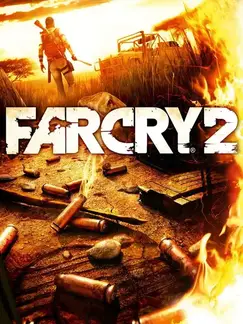

 |
|
| Tiempo de juego | 6m 38s |
| Última actividad | 17/11/2025 17:11:14 |
| Añadido | 27/7/2025 1:36:45 |
| Modificado | 3/12/2025 11:53:31 |
| Estado de finalización | Jugado |
| Librería | Playnite |
| Fuente | |
| Plataforma | PC (Windows) |
| Fecha de lanzamiento | 21/10/2008 |
| Puntuación de la Comunidad | 72 |
| Puntuación de la Crítica | 85 |
| Puntuación de usuario | |
| Género | Adventure Shooter |
| Desarrollador | Ubisoft Montreal |
| Editor | |
| Característica | Multiplayer Single Player |
| Enlaces | Official Steam Epic Wikipedia Twitch |
| Tag | |
Primero, lo más importante: olvidate de la isla, de los mercenarios y de Jack Carver. Esto no es Far Cry 1.5. Ubisoft agarró el nombre, tiró todo lo demás a la basura y creó una bestia completamente nueva y diferente: un simulador de supervivencia brutal y una de las experiencias más inmersivas que se han hecho jamás.
Este juego no te trata como a un boludo. No hay un HUD lleno de giladas que te tapen la pantalla. ¿Querés ver el mapa? Tu personaje saca un mapa de papel y lo mira. ¿Te hieren? Te sacás las balas del brazo con una pinza o te reacomodás un hueso. ¿Se te traba el arma en medio de un tiroteo? Jodete, la tendrías que haber cambiado. Y por si fuera poco, tenés malaria y necesitás buscar pastillas constantemente para no palmarla. Es inmersión en su estado más puro y hostil.
Te tiran en medio de un país africano ficticio en plena guerra civil con una sola misión: encontrar y matar a "El Chacal", un traficante de armas legendario. El mundo es un arenero de caos, un lugar horrible que te quiere muerto. Y el fuego... mamita querida, el FUEGO de este juego. Podías tirar una molotov y ver cómo las llamas se propagaban de forma realista con el viento, quemando un campamento entero o cortándote una vía de escape. Una locura técnica que sigue siendo impresionante.
Ahora, la posta: el juego no es para todos. Es áspero, es crudo y los puestos de guardia que se regeneran a los dos minutos de que los limpiaste te pueden hacer arrancar los pelos. Es una experiencia que te exige muchísimo y no te regala nada. Lo amás o lo odiás, no hay punto medio.
No es el Far Cry divertido de los memes y los animales locos. Es el Far Cry serio y deprimente. Un experimento increíble en diseño que ningún otro juego de la saga se atrevió a repetir. Una joya de culto para los que buscan un shooter que los desafíe de verdad.